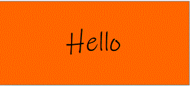

Y estas son 6 maneras de saludar en ingles que te pueden ser muy utiles al momento de querer saludar a alguien en ingles, no te olvides de ellas, por que quien sabe... -talvez algun dia te sirvan de algo,gracias por visitarnos
6 formas de saludar en ingles
hay muchas formas de saludar a tus conocidos en ingles, aqui te traigo 6 formas saludar en ingles
forma 1
HELLO es la forma mas facil de saludar a alguien, incluso alguien que no sabe ingles puede entender que se refiere a hola,ya que es mundialmente conocida
forma 2
HI tambien es una opcion para saludar a alguien en ingles,sobre todo si son tus amigos
forma 3
si quieres parecer un nativo no te olvides de decir "what¨/s upp", esta es una expresion muy usada entre hablantes nativos
forma 4
si quieres ser bastante formal con tu saludo , te recomiendo que uses GOOD MORNIND, que se traduce como BUENOS DIAS, una manera para saludar a los que talvez no conoces muy bien
forma 5
poque no saltarse hasta el COMO ESTAS?- puedes decir HOW ARE YOU, cuando desees saber como esta una persona
forma 6
GOOD EVENING es una buena opcion para saludar cuando estamos en la hora de la tarde, traducida como BUENAS TARDES